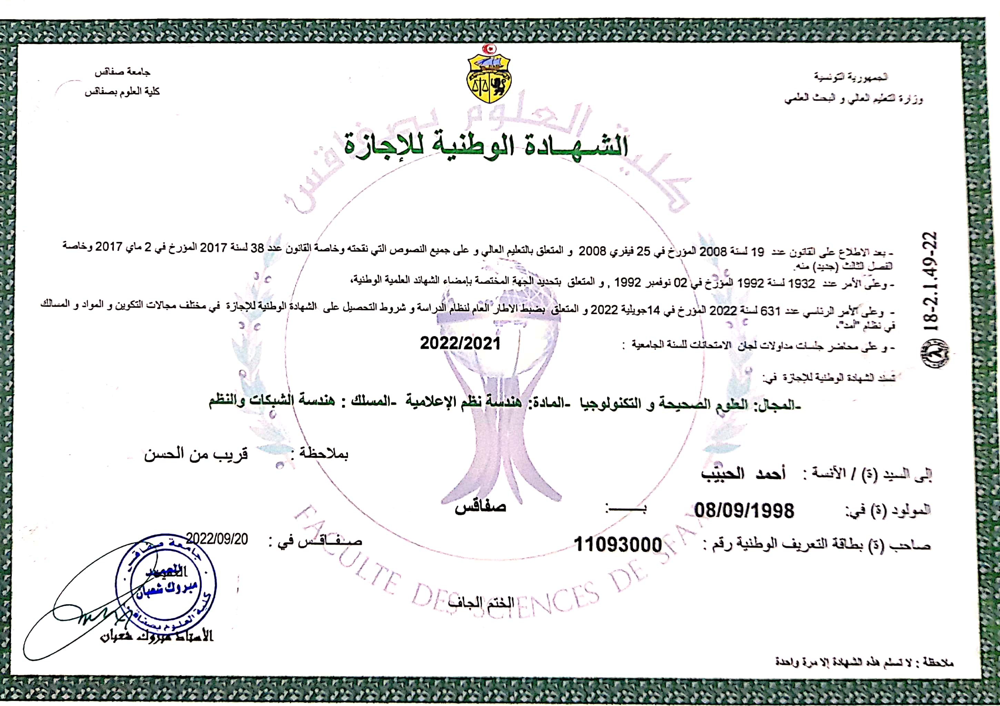
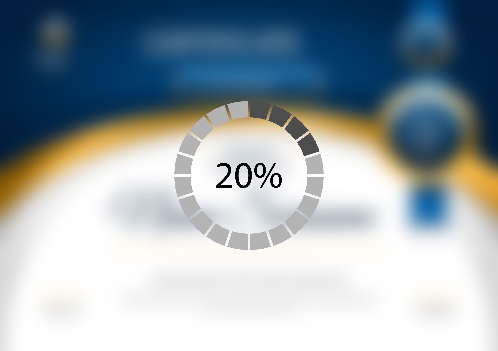

-
Baccalauréat
Science Expérimentale
 2019 | Baccalauréat Science Expérimentale Lycée Mongi Slim | Sfax, Tunisie
2019 | Baccalauréat Science Expérimentale Lycée Mongi Slim | Sfax, Tunisie
-
Licence
Licence en Ingénierie des systèmes informatique (Spécialité réseaux et systèmes)
2019 2019 - 2022 | Licence en Ingénierie des systèmes informatique (Spécialité réseaux et systèmes) Faculté des Sciences de Sfax | Sfax, Tunisie
-
Cycle d'ingénieur
Cycle d'ingénieur en génie informatique
2019 2022 - 2025 | Ingénierie génie informatique Université Nord Américaine Privée : Institut International de Technologie | Sfax, Tunisie